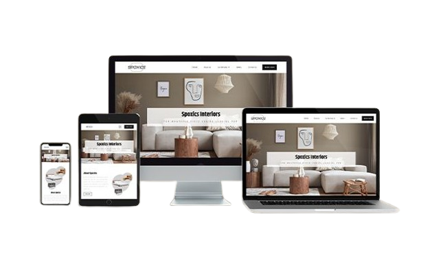

V
VitaShop
WebConcept de boutique en ligne moderne avec panier et fiches produits.
Stedra Digital conçoit des sites web, applications, identités visuelles, contenus et solutions numériques pour les entreprises, entrepreneurs, commerçants, startups, associations et porteurs de projets. Nous transformons vos besoins en outils concrets, modernes et adaptés à votre réalité.

Stedra Digital n'est pas simplement une structure qui produit des éléments visuels ou techniques. Nous commençons toujours par écouter, comprendre votre activité, votre public et vos objectifs — avant de proposer une solution réellement adaptée à votre contexte.
En savoir plus sur Stedra DigitalSites vitrines, e-commerce, landing pages, applications web et mobiles, solutions sur mesure.
Identité visuelle, logos, affiches, flyers, visuels réseaux sociaux et supports de communication.
Stratégie digitale, community management, création de contenu et visibilité en ligne.
Montage, vidéos promotionnelles, contenus réseaux sociaux, formats courts et vidéos YouTube.
Installation système, logiciels, configuration, maintenance, assistance et réseau de base.
Parlons-en. Nous concevons aussi des solutions sur mesure adaptées à votre contexte.
Demander un devisNous privilégions la clarté, la qualité et la proximité à chaque étape de votre projet.
Chaque projet débute par une compréhension réelle de votre besoin, de votre activité et de votre public.
Les propositions tiennent compte de votre contexte, de vos objectifs et de votre budget.
Des technologies et des méthodes alignées avec les usages numériques actuels.
Le client peut échanger facilement avec l'agence, à tout moment, via les canaux qui lui conviennent.
Design, expérience utilisateur, performance et cohérence : nous soignons chaque élément.
Des échanges clairs sur les étapes, les besoins et les livrables, sans zone d'ombre.
Une démarche en 4 étapes, simple et structurée, pour aller de l'idée à la solution.
Analyser votre besoin, vos objectifs et votre contexte pour bien cadrer le projet.
Définir la solution, la structure et l'expérience utilisateur adaptées à votre projet.
Développer, produire et intégrer la solution avec attention portée aux détails.
Livrer le projet et continuer à vous accompagner selon vos besoins et votre évolution.
Certains projets sont des concepts, des démos ou des travaux personnels, présentés à titre d'illustration de notre approche.
Concept de boutique en ligne moderne avec panier et fiches produits.
Prototype d'application mobile de mise en relation.
Exploration d'une identité visuelle sobre et contemporaine.

Fondateur
Japhet Bondoumbou
Derrière Stedra Digital, il y a une personne passionnée par le numérique, le design et la résolution de problèmes concrets. Japhet accompagne les clients de la première discussion jusqu'à la livraison, en s'assurant que chaque solution reflète fidèlement le besoin exprimé.
Son approche : comprendre avant de proposer, construire avec méthode, et rester disponible après la livraison.
Décrivez-nous votre besoin en quelques clics. Nous vous recontacterons avec une proposition adaptée à votre projet, votre contexte et votre budget.
Demander un devis